Food
A typical Thai meal includes five main flavors: salty, sweet, sour, bitter, and spicy. Indeed, most Thai dishes are not considered satisfying unless they combine all five. While the seasoning can be spicy for a foreign palate, Thai food ensures that a balance of all flavors is present. When eating out, or making a meal at home, a group of Thai diners would eat a variety of meat and/or fish dishes, plus vegetables, a noodle dish, and possibly soup. Everything is shared, except the soup each person might order, or each person gets a personal bowl to get a serving of the soup. Dessert may consist simply of fresh fruit, such as pineapple or any of the thousands of tropical fruits that are common in the country (guava, durian, mangosteen, papayas, bananas, tamarind, or mangoes, amongs many). Or it could be something more elaborate, like colorful rice cakes, rice dumplings coated in coconut, grass jelly, or a bean dessert. The flavors found in modern-day Thailand come from ancient history. As early as the 13th century, the Thai people had established what might be considered the heart of Siamese cuisine as we know it today: various types of meat and seafood combined with rice, local vegetables, herbs, and pungent garlic and pepper. Later on, the Chinese brought noodles to Thailand, as well as the most important Thai cooking tool: the steel wok.
Most typical foods you can find in Thailand
- Guay Teow (Noodle Soup)
- Tom Yum Goong (Spicy Shrimp Soup)
- Tom Kha Gai (Chicken in Coconut Soup)
- Som Tam (Spicy Green Papaya Salad)
- Laab (Spicy Salad)
 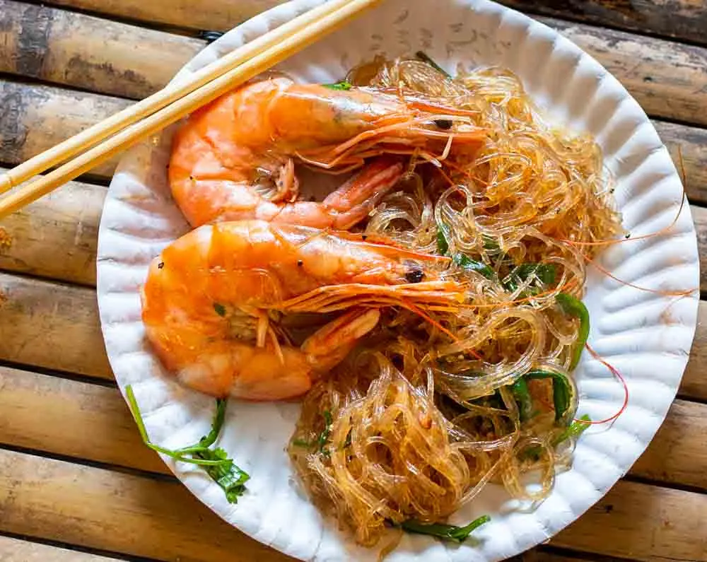
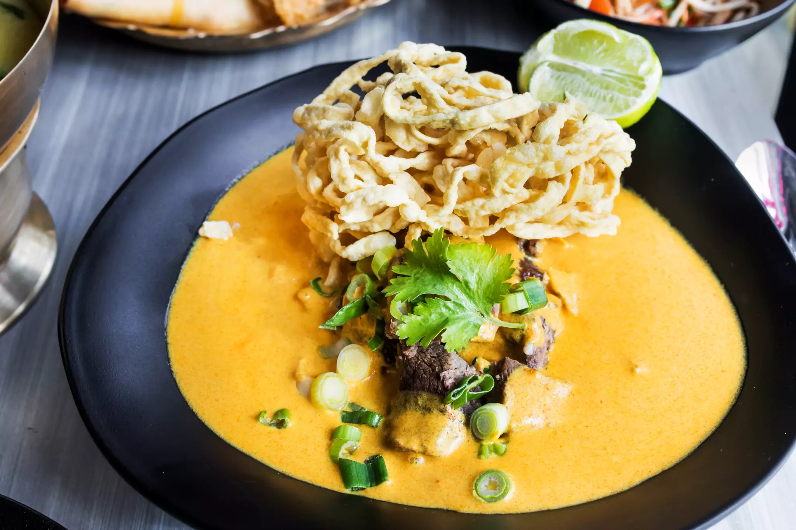
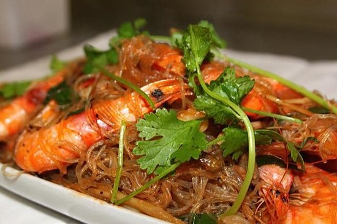
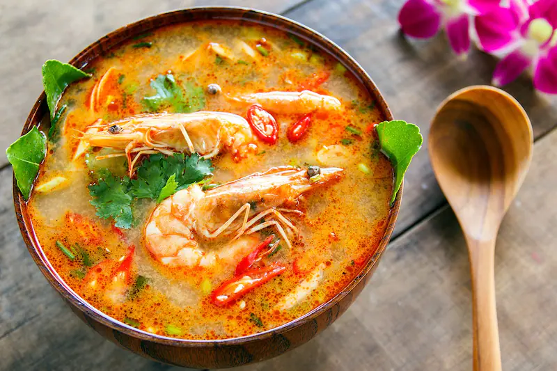
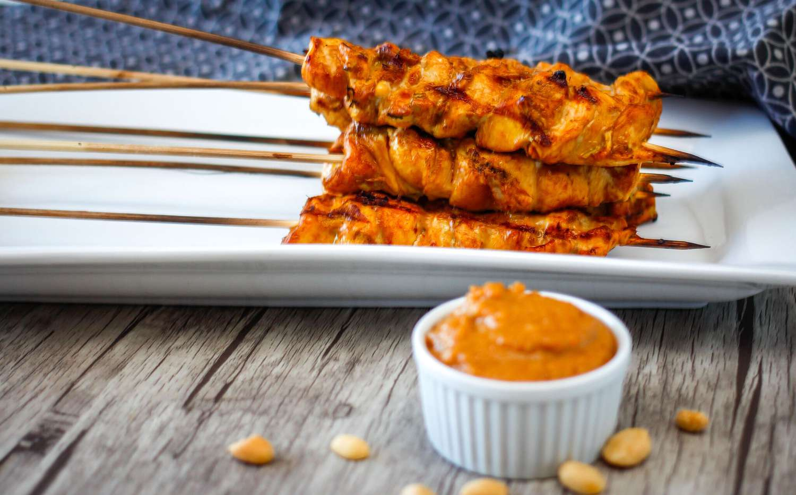
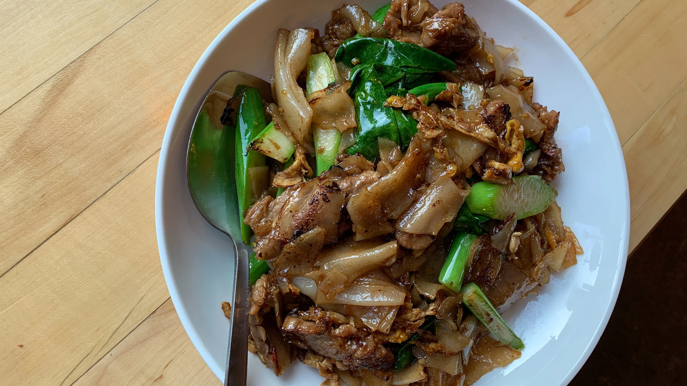
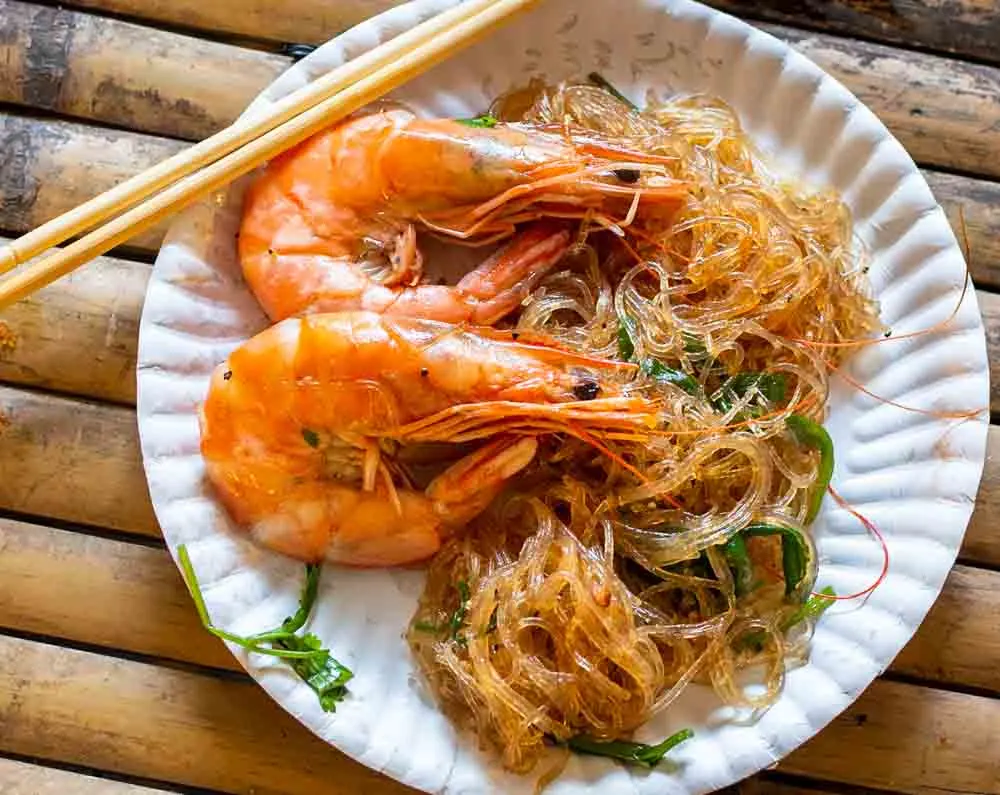
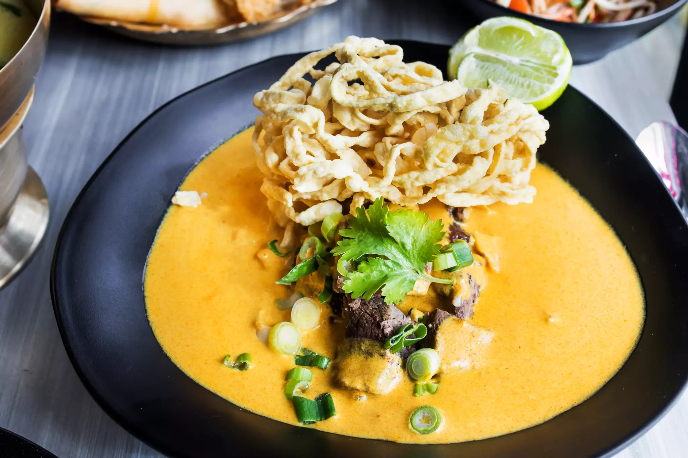
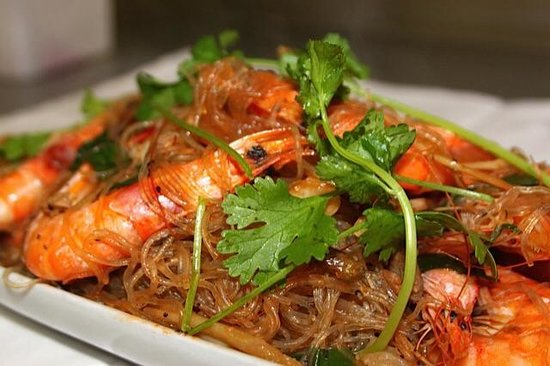
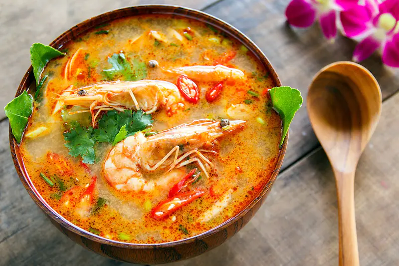
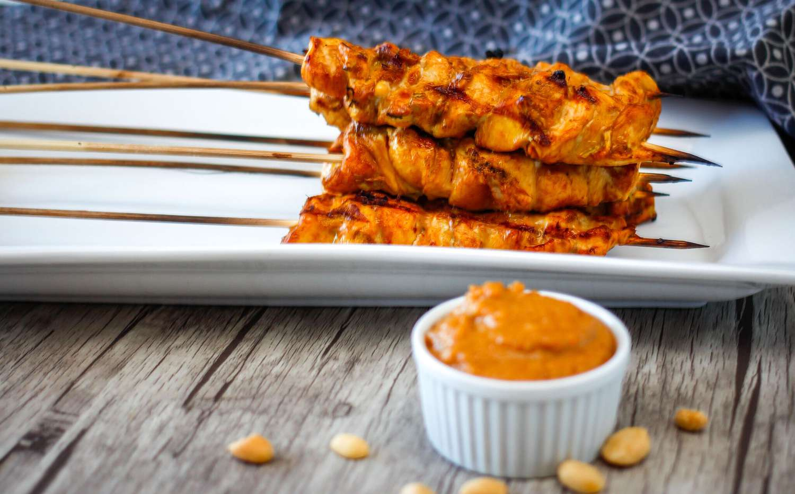
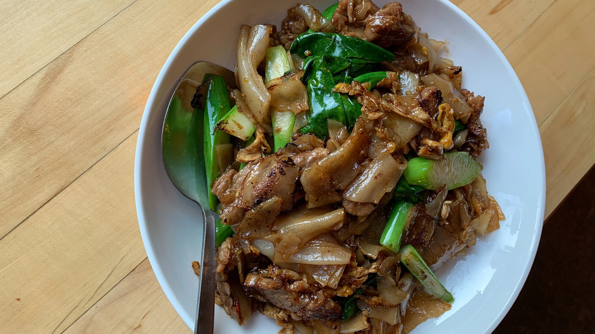